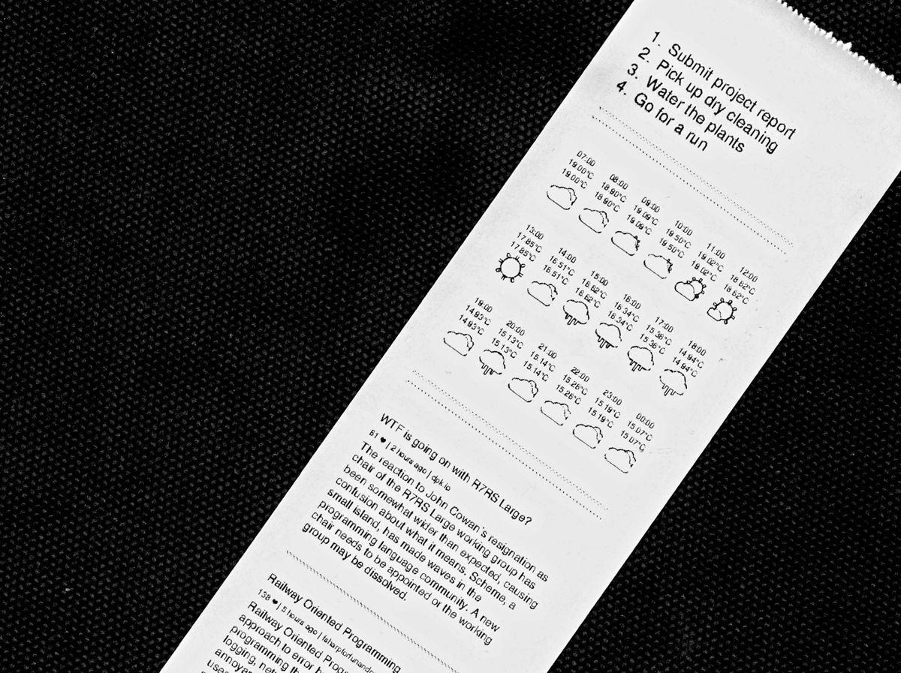
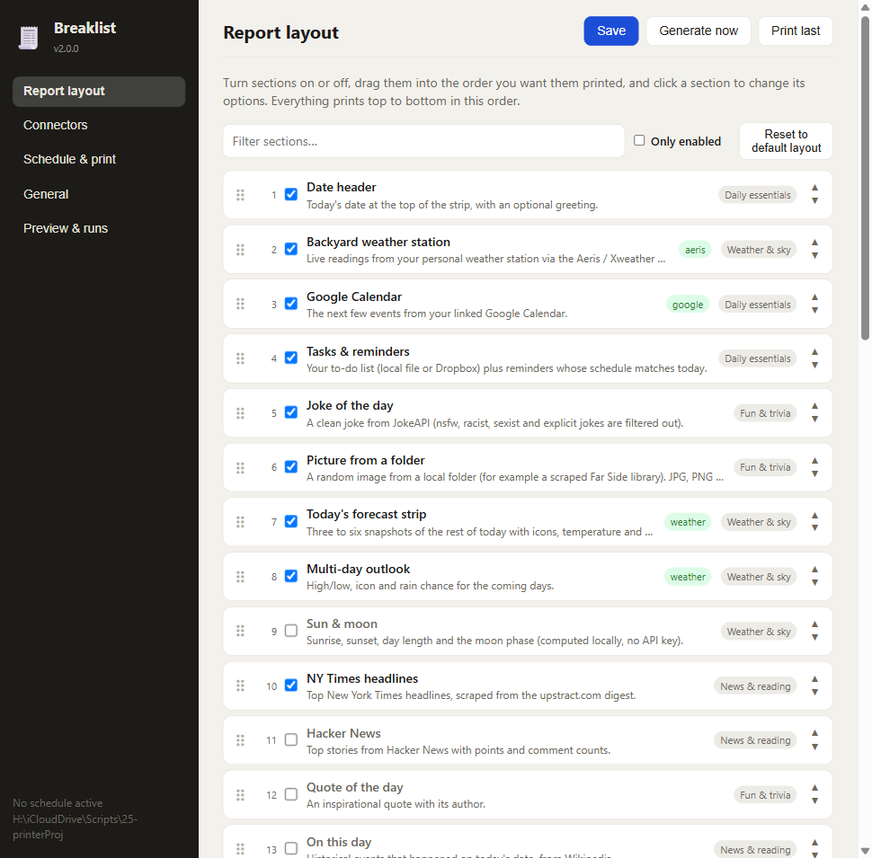
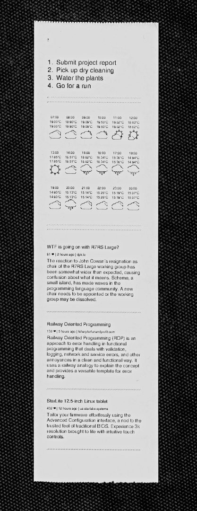

Building Tickr, a Morning Briefing for a Receipt Printer
Every morning a strip of thermal paper comes out of a receipt printer with the day's calendar, the weather, the to-do list, a comic, and a page of things for a small person to trace and colour. Tear it off, stick it on the fridge, get on with the day. There is no app to open and nothing that buzzes. That's the whole idea, and it is called Tickr.

A real morning printout.
It started as a script
The first version was called Breaklist. It was one Go program, about 2,100 lines, that did everything in a row: pull headlines from the New York Times (scraped from a digest page), top stories from Hacker News, events from Google Calendar, the weather, tasks from a Dropbox file, a joke from a joke API, and a random Far Side strip from a folder on disk. It filled an HTML template, converted it to a 47 mm-wide grayscale PDF with wkhtmltopdf, and printed it.
It worked, but it was built for one machine. The sections were wired into main.go, the Far Side folder and the wkhtmltopdf location were absolute Windows paths, and reminders were cron-style lines in a text file. Adding a section meant editing the program.
Rewriting it as a tool
The second version, Breaklist 2 and then Tickr, flipped the design. Every section is a small module that implements two methods: one that describes its options, and one that returns an HTML fragment. Register it and the settings form appears in a web interface automatically. Run tickr open and you get a page where you switch sections on and off, drag them into order, connect services, and set a schedule.

The layout editor, still under its old name Breaklist.
It grew to 45 sections and about 12,700 lines of Go, plus tests for the parts that could break quietly: the config store, the scheduler, the reminder matcher and the maze generator. It is still one binary with no build step for the interface.
Paper is the hard part
Some of the most stubborn problems sat between the PDF and the paper, and they all failed silently. The development notes use an Epson TM-T20II as the worked example:
- Its Windows driver declares an 80 mm roll, but only about 72 mm is printable, starting 3 mm in from the left edge. Set the width past that and the right edge is clipped.
- Its default paper form is a fixed 297 mm long. Anything taller is cut off with no error anywhere. wkhtmltopdf, the print command and Windows all report success. The fix is a different form in Windows’ own printer preferences.
- Printing through Adobe Acrobat ignores the PDF’s page size and vertically centres the content on the current form. Combined with the long form, a normal report printed after several feet of blank paper. Tickr now prints with SumatraPDF, which uses each PDF’s exact size.
The way out was a millimetre ruler test strip, printed through the same path as a real report, and reading the numbers off the paper. Estimates eyeballed from a curled receipt ran one and a half to two times the driver’s own figures, and the driver was right.
Tickr also measures the page instead of guessing: it renders the content once to an image to get the exact height, then renders the PDF at that height, so the strip is exactly as long as what is on it.
A thermal printer prints in black or white
Weather icons in colour turn to mud on a 1-bit printer, so Tickr draws its own outline glyphs as inline SVG, mapped from the weather service’s condition codes. The hourly forecast on the strip is the result. Photos are cropped around a detected face, resized and dithered before printing.

Tasks, an hourly forecast, and news.
Making the flaky parts dependable
A morning printout depends on things that break at 6 a.m.: a feed that moved, a venue’s site down for the night. The local events section handles that in layers. Each source is fetched separately with three retries, waiting 1, 3 and 9 seconds. Every source's last good result is cached, so a failure falls back to it and the printout gets a small “(1 source unavailable)” note instead of a hole. A source that keeps failing gets paused, for 10 minutes and then longer, up to 12 hours, so one dead feed doesn't add 25 seconds to every run. And if nothing is available at all, the section is skipped and everything else still prints.
There is also a page for the small person in the house: a letter and a number to trace, stars to count, a shape to colour, and a fresh maze every day. The mazes are made with a recursive backtracker, and the tests check that every one can be solved.
What it is for
Tickr is a low-tech way to start the day. The information is the same as a phone would give you, but on a slip of paper that stays put, with no notifications and no screen. You can also send it a one-off note to print, through a Telegram bot or an authenticated HTTP call.
Why paper at all? That story starts at a drugstore checkout and a kitchen line. I wrote it up in The Long Receipt.